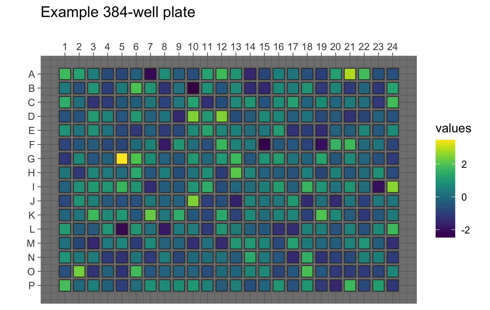
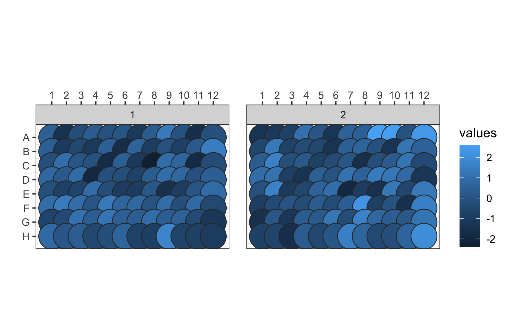

![]()
# library(plater)
pacman::p_load(platetools, ggplot2, viridis)numbers <- 1:96
num_to_well(numbers)
## [1] "A01" "A02" "A03" "A04" "A05" "A06" "A07" "A08" "A09" "A10" "A11" "A12"
## [13] "B01" "B02" "B03" "B04" "B05" "B06" "B07" "B08" "B09" "B10" "B11" "B12"
## [25] "C01" "C02" "C03" "C04" "C05" "C06" "C07" "C08" "C09" "C10" "C11" "C12"
## [37] "D01" "D02" "D03" "D04" "D05" "D06" "D07" "D08" "D09" "D10" "D11" "D12"
## [49] "E01" "E02" "E03" "E04" "E05" "E06" "E07" "E08" "E09" "E10" "E11" "E12"
## [61] "F01" "F02" "F03" "F04" "F05" "F06" "F07" "F08" "F09" "F10" "F11" "F12"
## [73] "G01" "G02" "G03" "G04" "G05" "G06" "G07" "G08" "G09" "G10" "G11" "G12"
## [85] "H01" "H02" "H03" "H04" "H05" "H06" "H07" "H08" "H09" "H10" "H11" "H12"numbers <- 320:384
num_to_well(numbers, plate = 384)
## [1] "N08" "N09" "N10" "N11" "N12" "N13" "N14" "N15" "N16" "N17" "N18" "N19"
## [13] "N20" "N21" "N22" "N23" "N24" "O01" "O02" "O03" "O04" "O05" "O06" "O07"
## [25] "O08" "O09" "O10" "O11" "O12" "O13" "O14" "O15" "O16" "O17" "O18" "O19"
## [37] "O20" "O21" "O22" "O23" "O24" "P01" "P02" "P03" "P04" "P05" "P06" "P07"
## [49] "P08" "P09" "P10" "P11" "P12" "P13" "P14" "P15" "P16" "P17" "P18" "P19"
## [61] "P20" "P21" "P22" "P23" "P24"# example dataframe
df <- data.frame(vals = rnorm(384),
well = num_to_well(1:384, plate = 384))
raw_map(data = df$vals,
well = df$well,
plate = 384) +
ggtitle("Example 384-well plate") +
theme_dark() +
scale_fill_viridis()
df01 <- data.frame(well = num_to_well(1:96),
vals = rnorm(96),
plate = 1)
df02 <- data.frame(well = num_to_well(1:96),
vals = rnorm(96),
plate = 2)
df <- rbind(df01, df02)
raw_grid(data = df$vals,
well = df$well,
plate_id = df$plate,
plate = 96)